Code
source("../dsan-globals/_globals.r")
set.seed(5300)DSAN 5300: Statistical Learning
Spring 2025, Georgetown University
Today’s Planned Schedule:
| Start | End | Topic | |
|---|---|---|---|
| Lecture | 6:30pm | 7:00pm | Separating Hyperplanes → |
| 7:00pm | 7:20pm | Max-Margin Classifiers → | |
| 7:20pm | 8:00pm | Support Vector Classifiers → | |
| Break! | 8:00pm | 8:10pm | |
| 8:10pm | 9:00pm | Support Vector Machines → |
source("../dsan-globals/_globals.r")
set.seed(5300)\[ \DeclareMathOperator*{\argmax}{argmax} \DeclareMathOperator*{\argmin}{argmin} \newcommand{\bigexp}[1]{\exp\mkern-4mu\left[ #1 \right]} \newcommand{\bigexpect}[1]{\mathbb{E}\mkern-4mu \left[ #1 \right]} \newcommand{\definedas}{\overset{\small\text{def}}{=}} \newcommand{\definedalign}{\overset{\phantom{\text{defn}}}{=}} \newcommand{\eqeventual}{\overset{\text{eventually}}{=}} \newcommand{\Err}{\text{Err}} \newcommand{\expect}[1]{\mathbb{E}[#1]} \newcommand{\expectsq}[1]{\mathbb{E}^2[#1]} \newcommand{\fw}[1]{\texttt{#1}} \newcommand{\given}{\mid} \newcommand{\green}[1]{\color{green}{#1}} \newcommand{\heads}{\outcome{heads}} \newcommand{\iid}{\overset{\text{\small{iid}}}{\sim}} \newcommand{\lik}{\mathcal{L}} \newcommand{\loglik}{\ell} \DeclareMathOperator*{\maximize}{maximize} \DeclareMathOperator*{\minimize}{minimize} \newcommand{\mle}{\textsf{ML}} \newcommand{\nimplies}{\;\not\!\!\!\!\implies} \newcommand{\orange}[1]{\color{orange}{#1}} \newcommand{\outcome}[1]{\textsf{#1}} \newcommand{\param}[1]{{\color{purple} #1}} \newcommand{\pgsamplespace}{\{\green{1},\green{2},\green{3},\purp{4},\purp{5},\purp{6}\}} \newcommand{\prob}[1]{P\left( #1 \right)} \newcommand{\purp}[1]{\color{purple}{#1}} \newcommand{\sign}{\text{Sign}} \newcommand{\spacecap}{\; \cap \;} \newcommand{\spacewedge}{\; \wedge \;} \newcommand{\tails}{\outcome{tails}} \newcommand{\Var}[1]{\text{Var}[#1]} \newcommand{\bigVar}[1]{\text{Var}\mkern-4mu \left[ #1 \right]} \]
library(tidyverse) |> suppressPackageStartupMessages()
house_df <- tibble::tribble(
~sqm, ~yrs, ~Rating,
10, 5, "Disliked",
10, 20, "Disliked",
20, 22, "Liked",
25, 12, "Liked",
11, 15, "Disliked",
22.1, 5, "Liked"
) |> mutate(
label = ifelse(Rating == "Liked", 1, -1)
)
base_plot <- house_df |> ggplot(aes(x=sqm, y=yrs)) +
labs(
title = "Jeff's House Search",
x = "Square Meters",
y = "Years Old"
) +
expand_limits(x=c(0,25), y=c(0,25)) +
coord_equal() +
# 45 is minus sign, 95 is em-dash
scale_shape_manual(values=c(95, 43)) +
theme_dsan(base_size=14)
base_plot +
geom_point(
aes(color=Rating, shape=Rating), size=g_pointsize * 0.9,
stroke=6
) +
geom_point(aes(fill=Rating), color='black', shape=21, size=6, stroke=0.75, alpha=0.333)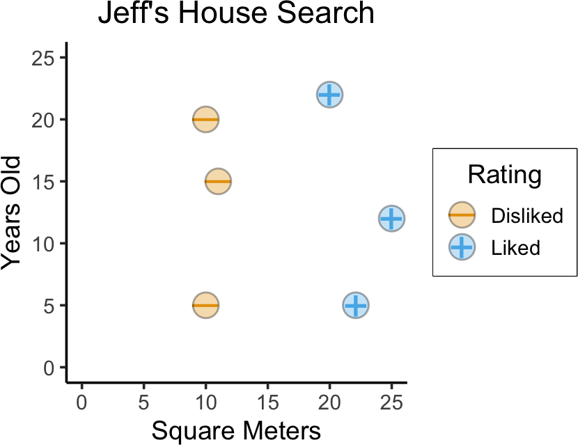
set.seed(5300)
is_separating <- function(beta_vec) {
beta_str <- paste0(beta_vec, collapse=",")
# print(paste0("is_separating: ",beta_str))
margins <- c()
for (i in 1:nrow(house_df)) {
cur_data <- house_df[i,]
# print(cur_data)
linear_comb <- beta_vec[1] + beta_vec[2] * cur_data$sqm + beta_vec[3] * cur_data$yrs
cur_margin <- cur_data$label * linear_comb
# print(cur_margin)
margins <- c(margins, cur_margin)
}
#print(margins)
return(all(margins > 0) | all(margins < 0))
}
cust_rand_lines_df <- tribble(
~b0, ~b1, ~b2,
# 41, -0.025, -1,
165, -8, -1,
-980, 62, -1
) |> mutate(
slope=-(b1/b2),
intercept=-(b0/b2)
)
num_lines <- 20
rand_b0 <- runif(num_lines, min=-40, max=40)
rand_b1 <- runif(num_lines, min=-2, max=2)
# rand_b2 <- -1 + 2*rbernoulli(num_lines)
rand_b2 <- -1
rand_lines_df <- tibble::tibble(
id=1:num_lines,
b0=rand_b0,
b1=rand_b1,
b2=rand_b2
) |> mutate(
slope=-(b1/b2),
intercept=-(b0/b2)
)
rand_lines_df <- bind_rows(rand_lines_df, cust_rand_lines_df)
# Old school for loop
for (i in 1:nrow(rand_lines_df)) {
cur_line <- rand_lines_df[i,]
cur_beta_vec <- c(cur_line$b0, cur_line$b1, cur_line$b2)
cur_is_sep <- is_separating(cur_beta_vec)
rand_lines_df[i, "is_sep"] <- cur_is_sep
}
base_plot +
geom_abline(
data=rand_lines_df, aes(slope=slope, intercept=intercept), linetype="dashed"
) +
geom_point(
aes(color=Rating, shape=Rating), size=g_pointsize * 0.9,
stroke=6
) +
geom_point(aes(fill=Rating), color='black', shape=21, size=6, stroke=0.75, alpha=0.333) +
labs(
title = paste0("10 Boundary Guesses"),
x = "Square Meters",
y = "Years Old"
)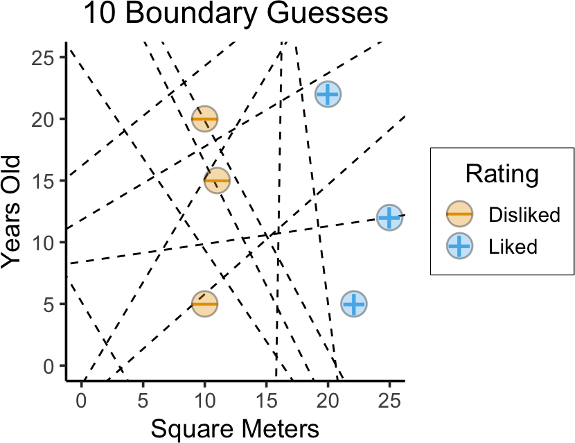
(…Which one is “best”?)
base_plot +
geom_abline(
data=rand_lines_df, aes(slope=slope, intercept=intercept, linetype=is_sep)
) +
geom_abline(
data=rand_lines_df |> filter(is_sep),
aes(slope=slope, intercept=intercept),
linewidth=3, color=cb_palette[4], alpha=0.333
) +
scale_linetype_manual("Separating?", values=c("dotted", "dashed")) +
geom_point(
aes(color=Rating, shape=Rating), size=g_pointsize * 0.9,
stroke=6
) +
geom_point(aes(fill=Rating), color='black', shape=21, size=6, stroke=0.75, alpha=0.333) +
labs(
title = paste0("The Like vs. Dislike Boundary: 10 Guesses"),
x = "Square Meters",
y = "Years Old"
)
sep_lines_df <- rand_lines_df |> filter(is_sep) |> mutate(
norm_slope = (-1)/slope
)
cur_line_df <- sep_lines_df |> filter(slope > 0)
# left_line_df
# And make one copy per point
cur_sup_df <- uncount(cur_line_df, nrow(house_df))
cur_sup_df <- bind_cols(cur_sup_df, house_df)
cur_sup_df <- cur_sup_df |> mutate(
norm_intercept = yrs - norm_slope * sqm,
margin_intercept = yrs - slope * sqm,
margin_intercept_gap = intercept - margin_intercept,
margin_intercept_inv = intercept + margin_intercept_gap,
norm_cross_x = -(norm_intercept - intercept) / (norm_slope - slope),
x_gap = norm_cross_x - sqm,
norm_cross_y = yrs + x_gap * norm_slope,
vec_margin = label * (b0 + b1 * sqm + b2 * yrs),
is_sv = vec_margin <= 240
)
base_plot +
geom_abline(
data=cur_line_df, aes(slope=slope, intercept=intercept), linetype="solid"
) +
geom_abline(
data=cur_sup_df |> filter(is_sv),
aes(
slope=slope,
intercept=margin_intercept
),
linetype="dashed"
) +
geom_abline(
data=cur_sup_df |> filter(is_sv),
aes(
slope=slope,
intercept=margin_intercept_inv
),
linetype="dashed"
) +
geom_segment(
data=cur_sup_df |> filter(is_sv),
aes(x=sqm, y=yrs, xend=norm_cross_x, yend=norm_cross_y),
color=cb_palette[4], linewidth=3
) +
geom_segment(
data=cur_sup_df,
aes(x=sqm, y=yrs, xend=norm_cross_x, yend=norm_cross_y, linetype=is_sv)
) +
geom_point(
aes(color=Rating, shape=Rating), size=g_pointsize * 0.9,
stroke=6
) +
geom_point(aes(fill=Rating), color='black', shape=21, size=6, stroke=0.75, alpha=0.333) +
scale_linetype_manual("Support\nVector?", values=c("dotted", "solid")) +
labs(
title = paste0("Left Hyperplane Distances"),
x = "Square Meters",
y = "Years Old"
)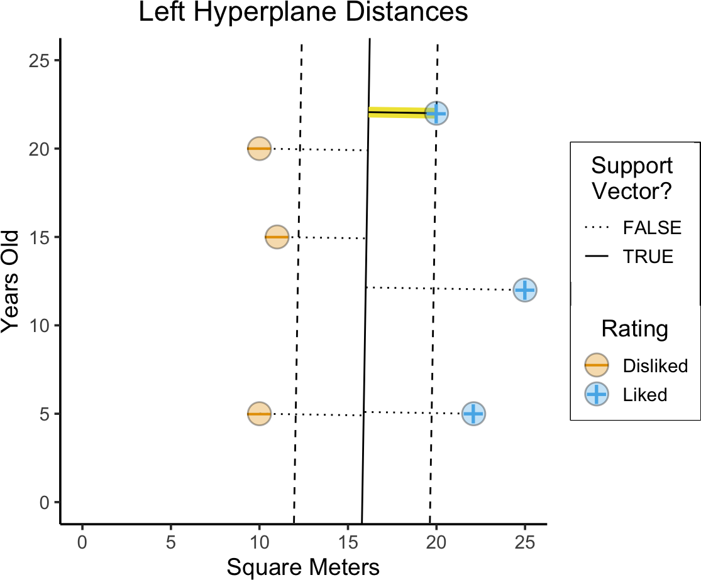
# New calculation: line with same slope but that hits the SV
# y - y1 = m(x - x1), so...
# y - yrs = m(x - sqm) <=> y = m(x-sqm) + yrs <=> y = mx - m*sqm + yrs
# <=> b = yrs - -m*sqm
cur_line_df <- sep_lines_df |> filter(slope < 0)
# left_line_df
# And make one copy per point
cur_sup_df <- uncount(cur_line_df, nrow(house_df))
cur_sup_df <- bind_cols(cur_sup_df, house_df)
cur_sup_df <- cur_sup_df |> mutate(
norm_intercept = yrs - norm_slope * sqm,
margin_intercept = yrs - slope * sqm,
margin_intercept_gap = intercept - margin_intercept,
margin_intercept_inv = intercept + margin_intercept_gap,
norm_cross_x = -(norm_intercept - intercept) / (norm_slope - slope),
x_gap = norm_cross_x - sqm,
norm_cross_y = yrs + x_gap * norm_slope,
vec_margin = abs(label * (b0 + b1 * sqm + b2 * yrs)),
is_sv = vec_margin <= 25
)
base_plot +
geom_abline(
data=cur_line_df, aes(slope=slope, intercept=intercept), linetype="solid"
) +
geom_abline(
data=cur_sup_df |> filter(is_sv),
aes(
slope=slope,
intercept=margin_intercept
),
linetype="dashed"
) +
geom_abline(
data=cur_sup_df |> filter(is_sv),
aes(
slope=slope,
intercept=margin_intercept_inv
),
linetype="dashed"
) +
# geom_abline(
# data=cur_line_df,
# aes(slope=slope, intercept=intercept),
# linewidth=3, color=cb_palette[4], alpha=0.333
# ) +
geom_segment(
data=cur_sup_df |> filter(vec_margin <= 18),
aes(x=sqm, y=yrs, xend=norm_cross_x, yend=norm_cross_y),
color=cb_palette[4], linewidth=3
) +
geom_segment(
data=cur_sup_df,
aes(x=sqm, y=yrs, xend=norm_cross_x, yend=norm_cross_y, linetype=is_sv)
) +
geom_point(
aes(color=Rating, shape=Rating), size=g_pointsize * 0.9,
stroke=6
) +
geom_point(aes(fill=Rating), color='black', shape=21, size=6, stroke=0.75, alpha=0.333) +
scale_linetype_manual("Support\nVector?", values=c("dotted", "solid")) +
labs(
title = paste0("Right Hyperplane Margin"),
x = "Square Meters",
y = "Years Old"
)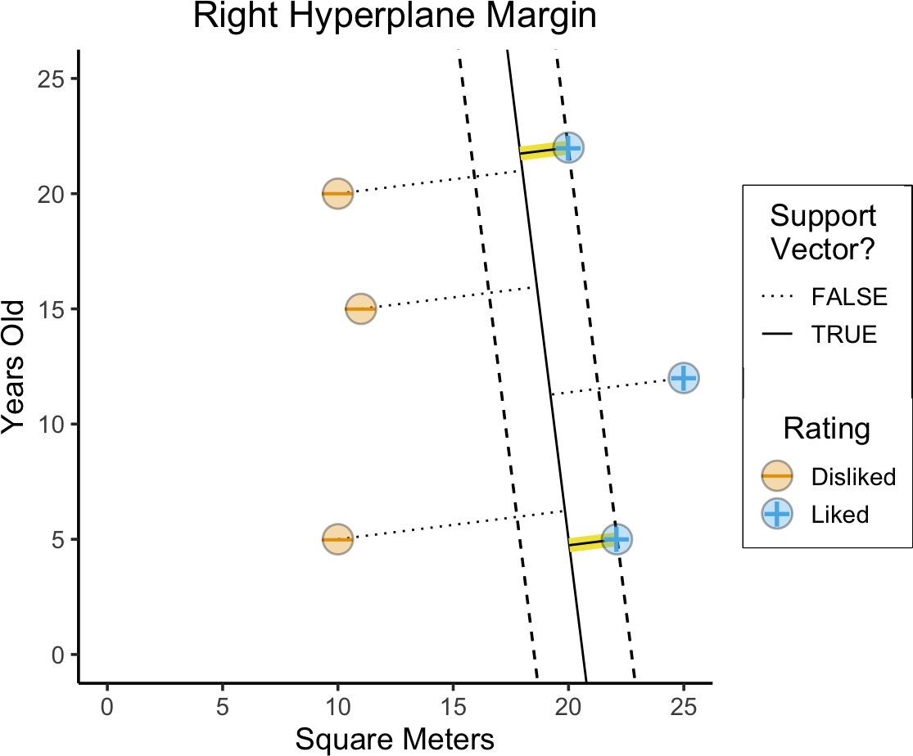
Let \(y_i = \begin{cases} +1 &\text{if house }i\text{ Liked} \\ -1 &\text{if house }i\text{ Disliked}\end{cases}\)
\[ \begin{align*} \underset{\beta_0, \beta_1, \beta_2, M}{\text{maximize}}\text{ } & M \\ \text{s.t. } & y_i(\beta_0 + \beta_1 x_{i1} + \beta_2 x_{i2}) \geq M, \\ ~ & \beta_0^2 + \beta_1^2 + \beta_2^2 = 1 \end{align*} \]
library(e1071)
liked <- as.factor(house_df$Rating == "Liked")
cent_df <- house_df
cent_df$sqm <- scale(cent_df$sqm)
cent_df$yrs <- scale(cent_df$yrs)
svm_model <- svm(liked ~ sqm + yrs, data=cent_df, kernel="linear")
cf <- coef(svm_model)
sep_intercept <- -cf[1] / cf[3]
sep_slope <- -cf[2] / cf[3]
# Invert Z-scores
sd_ratio <- sd(house_df$yrs) / sd(house_df$sqm)
inv_slope <- sd_ratio * sep_slope
inv_intercept <- mean(house_df$yrs) - inv_slope * mean(house_df$sqm) + sd(house_df$yrs)*sep_intercept
# And the margin boundary
sv_index <- svm_model$index[1]
sv_sqm <- house_df$sqm[sv_index]
sv_yrs <- house_df$yrs[sv_index]
margin_intercept <- sv_yrs - inv_slope * sv_sqm
margin_diff <- inv_intercept - margin_intercept
margin_intercept_inv <- inv_intercept + margin_diff
base_plot +
coord_equal() +
scale_shape_manual(values=c(95, 43)) +
theme_dsan(base_size=14) +
geom_abline(
intercept=inv_intercept, slope=inv_slope, linetype="solid"
) +
geom_abline(
intercept=margin_intercept, slope=inv_slope, linetype="dashed"
) +
geom_abline(
intercept=margin_intercept_inv, slope=inv_slope, linetype="dashed"
) +
geom_point(
aes(color=Rating, shape=Rating), size=g_pointsize * 0.9,
stroke=6
) +
geom_point(aes(fill=Rating), color='black', shape=21, size=6, stroke=0.75, alpha=0.333) +
scale_linetype_manual("Support\nVector?", values=c("dotted", "solid")) +
labs(
title = "Optimal Max-Margin Hyperplane",
x = "Square Meters",
y = "Years Old"
)Coordinate system already present. Adding new coordinate system, which will
replace the existing one.
Scale for shape is already present.
Adding another scale for shape, which will replace the existing scale.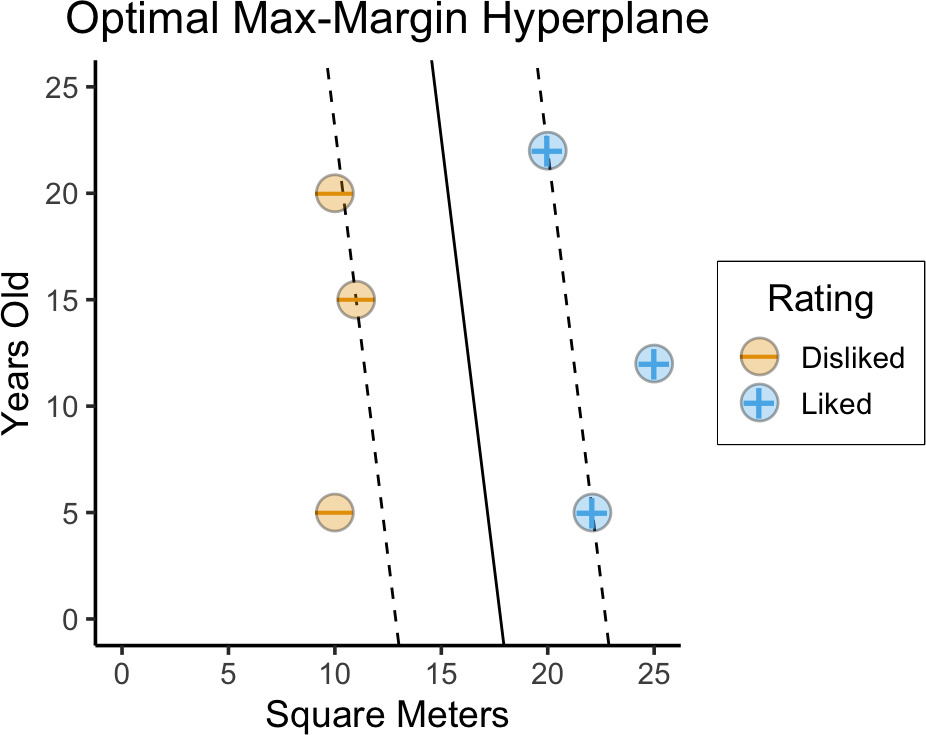
# Generate gaussian blob of disliked + gaussian
# blob of liked :3
library(mvtnorm) |> suppressPackageStartupMessages()
set.seed(5304)
num_houses <- 100
# Shared covariance matrix
Sigma_all <- matrix(c(12,0,0,20), nrow=2, ncol=2, byrow=TRUE)
# Negative datapoints
mu_neg <- c(10, 12.5)
neg_matrix <- rmvnorm(num_houses/2, mean=mu_neg, sigma=Sigma_all)
colnames(neg_matrix) <- c("sqm", "yrs")
neg_df <- as_tibble(neg_matrix) |> mutate(Rating="Disliked")
# Positive datapoints
mu_pos <- c(21, 12.5)
pos_matrix <- rmvnorm(num_houses/2, mean=mu_pos, sigma=Sigma_all)
colnames(pos_matrix) <- c("sqm", "yrs")
pos_df <- as_tibble(pos_matrix) |> mutate(Rating="Liked")
# And combine
nonsep_df <- bind_rows(neg_df, pos_df)
nonsep_df <- nonsep_df |> filter(yrs >= 5 & sqm <= 24 & sqm >= 7)
# Plot
nonsep_plot <- nonsep_df |> ggplot(aes(x=sqm, y=yrs)) +
labs(
title = "Jeff's House Search",
x = "Square Meters",
y = "Years Old"
) +
# xlim(6,25) + ylim(2,22) +
coord_equal() +
# 45 is minus sign, 95 is em-dash
scale_shape_manual(values=c(95, 43)) +
theme_dsan(base_size=22)
nonsep_plot +
geom_point(
aes(color=Rating, shape=Rating), size=g_pointsize * 0.25,
stroke=6
) +
geom_point(aes(fill=Rating), color='black', shape=21, size=4, stroke=0.75, alpha=0.333)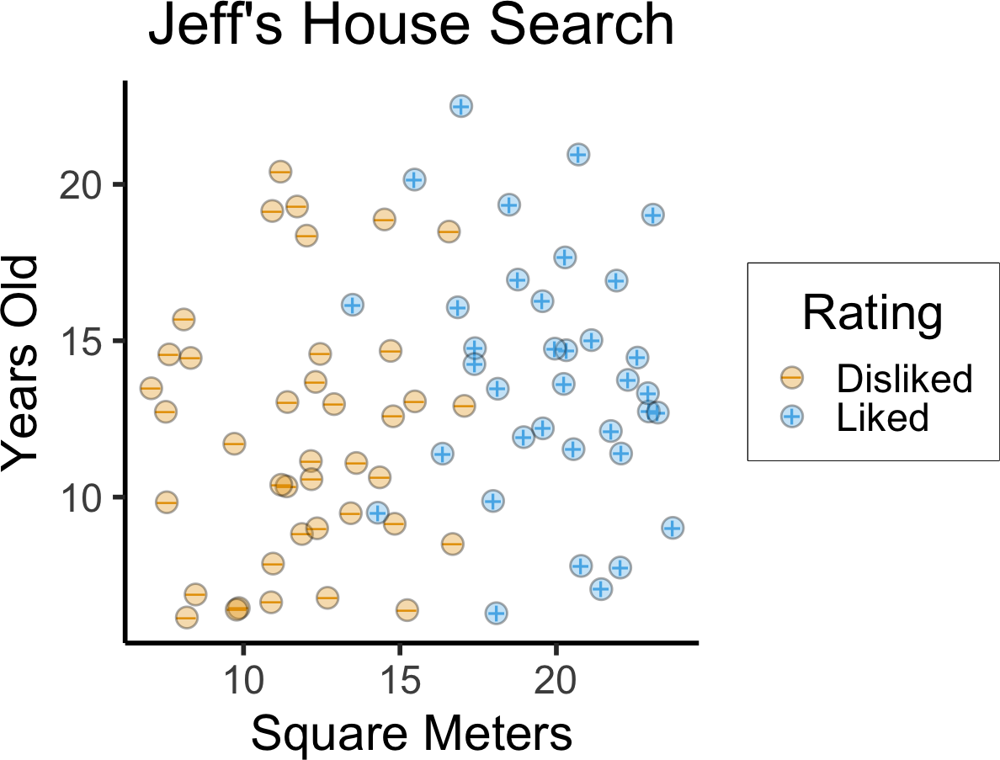


\[ \begin{align*} \underset{\beta_0, \beta_1, \beta_2, \varepsilon_1, \ldots, \varepsilon_n, M}{\text{maximize}}\text{ } \; & M \\ \text{s.t. } \; & y_i(\beta_0 + \beta_1 x_{i1} + \beta_2 x_{i2}) \geq M(1 - \varepsilon_i), \\ ~ & \varepsilon_i \geq 0, \sum_{i=1}^{n}\varepsilon_i \leq C, \\ ~ & \beta_0^2 + \beta_1^2 + \beta_2^2 = 1 \end{align*} \]
library(e1071)
liked <- as.factor(nonsep_df$Rating == "Liked")
nonsep_cent_df <- nonsep_df
nonsep_cent_df$sqm <- scale(nonsep_cent_df$sqm)
nonsep_cent_df$yrs <- scale(nonsep_cent_df$yrs)
# Compute boundary for different cost budgets
budget_vals <- c(0.01, 1, 5)
svm_df <- tibble(
sep_slope=numeric(), sep_intercept=numeric(),
inv_slope=numeric(), inv_intercept=numeric(),
margin_intercept=numeric(), margin_intercept_inv=numeric(),
budget=numeric(), budget_label=character()
)
for (cur_c in budget_vals) {
# print(cur_c)
svm_model <- svm(liked ~ sqm + yrs, data=nonsep_cent_df, kernel="linear", cost=cur_c)
cf <- coef(svm_model)
sep_intercept <- -cf[1] / cf[3]
sep_slope <- -cf[2] / cf[3]
# Invert Z-scores
sd_ratio <- sd(nonsep_df$yrs) / sd(nonsep_df$sqm)
inv_slope <- sd_ratio * sep_slope
inv_intercept <- mean(nonsep_df$yrs) - inv_slope * mean(nonsep_df$sqm) + sd(nonsep_df$yrs)*sep_intercept
# And the margin boundary
sv_index <- svm_model$index[1]
sv_sqm <- nonsep_df$sqm[sv_index]
sv_yrs <- nonsep_df$yrs[sv_index]
margin_intercept <- sv_yrs - inv_slope * sv_sqm
margin_diff <- inv_intercept - margin_intercept
margin_intercept_inv <- inv_intercept + margin_diff
cur_svm_row <- tibble_row(
budget = cur_c,
budget_label = paste0("Penalty = ",cur_c),
sep_slope = sep_slope,
sep_intercept = sep_intercept,
inv_slope = inv_slope,
inv_intercept = inv_intercept,
margin_intercept = margin_intercept,
margin_intercept_inv = margin_intercept_inv
)
svm_df <- bind_rows(svm_df, cur_svm_row)
}
ggplot() +
# xlim(6,25) + ylim(2,22) +
coord_equal() +
# 45 is minus sign, 95 is em-dash
scale_shape_manual(values=c(95, 43)) +
theme_dsan(base_size=14) +
geom_abline(
data=svm_df,
aes(intercept=inv_intercept, slope=inv_slope),
linetype="solid"
) +
geom_abline(
data=svm_df,
aes(intercept=margin_intercept, slope=inv_slope),
linetype="dashed"
) +
geom_abline(
data=svm_df,
aes(intercept=margin_intercept_inv, slope=inv_slope),
linetype="dashed"
) +
geom_point(
data=nonsep_df,
aes(x=sqm, y=yrs, color=Rating, shape=Rating), size=g_pointsize * 0.1,
stroke=5
) +
geom_point(
data=nonsep_df,
aes(x=sqm, y=yrs, fill=Rating), color='black', shape=21, size=3, stroke=0.75, alpha=0.333
) +
labs(
title = "Support Vector Classifier",
x = "Square Meters",
y = "Years Old"
) +
facet_wrap(vars(budget_label), nrow=1) +
theme(
panel.border = element_rect(color = "black", fill = NA, size = 0.4)
)Warning: The `size` argument of `element_rect()` is deprecated as of ggplot2 3.4.0.
ℹ Please use the `linewidth` argument instead.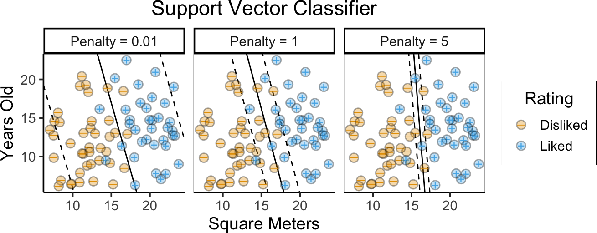
\[ \text{Nonlinear model} = \text{Linear model} \underbrace{- \; \text{linearity restriction}}_{\text{Enables overfitting...}} \underbrace{+ \text{ Complexity penalty}}_{\text{Prevent overfitting}} \]

This is where stuff gets super…
Linear
1D Hyperplane = point! But no separating point here 😰
library(latex2exp) |> suppressPackageStartupMessages()
x_vals <- runif(50, min=-9, max=9)
data_df <- tibble(x=x_vals) |> mutate(
label = factor(ifelse(abs(x) >= 6, 1, -1)),
x2 = x^2
)
data_df |> ggplot(aes(x=x, y=0, color=label)) +
geom_point(
aes(color=label, shape=label), size=g_pointsize,
stroke=6
) +
geom_point(
aes(fill=label), color='black', shape=21, size=6, stroke=0.75, alpha=0.333
) +
# xlim(6,25) + ylim(2,22) +
# coord_equal() +
# 45 is minus sign, 95 is em-dash
scale_shape_manual(values=c(95, 43)) +
theme_dsan(base_size=28) +
theme(
axis.line.y = element_blank(),
axis.text.y = element_blank(),
axis.ticks.y = element_blank(),
axis.title.y = element_blank()
) +
xlim(-10, 10) +
ylim(-0.1, 0.1) +
labs(title="Non-Linearly-Separable Data") +
theme(
plot.margin = unit(c(0,0,0,20), "mm")
)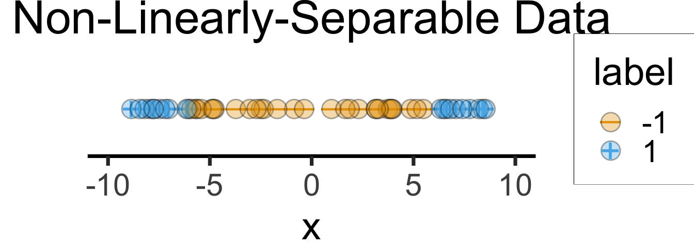
data_df |> ggplot(aes(x=x, y=x2, color=label)) +
geom_point(
aes(color=label, shape=label), size=g_pointsize,
stroke=6
) +
geom_point(
aes(fill=label), color='black', shape=21, size=6, stroke=0.75, alpha=0.333
) +
geom_hline(yintercept=36, linetype="dashed") +
# xlim(6,25) + ylim(2,22) +
# coord_equal() +
# 45 is minus sign, 95 is em-dash
scale_shape_manual(values=c(95, 43)) +
theme_dsan(base_size=28) +
xlim(-10, 10) +
labs(
title = TeX("...Linearly Separable in $R^2$!"),
y = TeX("$x^2$")
)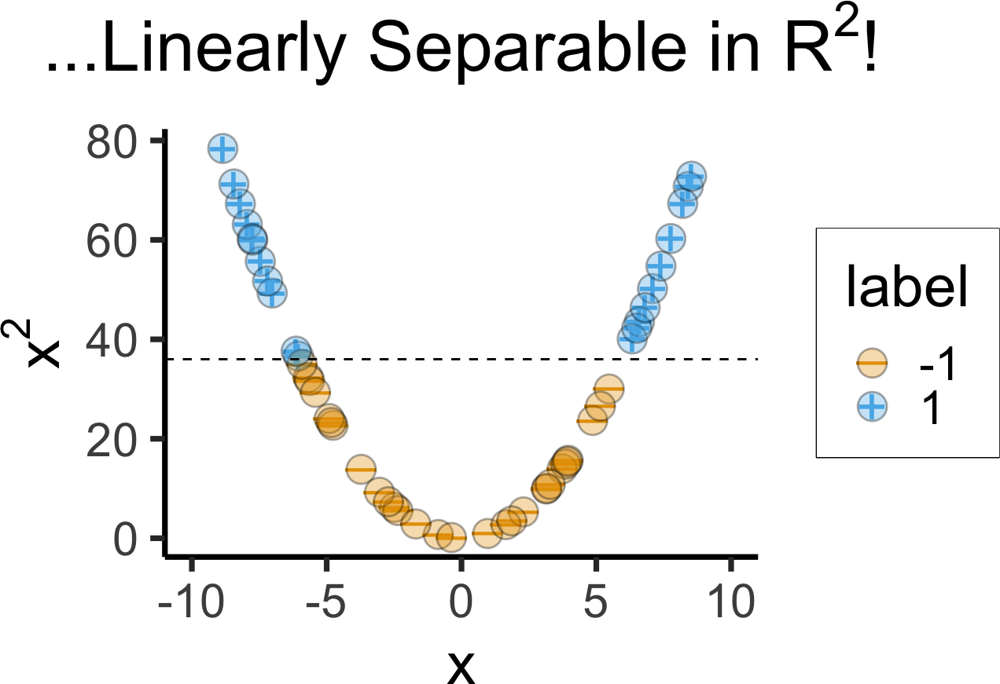
Radial Basis Function (RBF) Kernel:
\[ K(x_i, x_{i'}) = \exp\left[ -\gamma \sum_{j=1}^{J} (x_{ij} - x_{i'j})^2 \right] \]
library(kernlab) |> suppressPackageStartupMessages()
library(mlbench) |> suppressPackageStartupMessages()
if (!file.exists("assets/linspike_df.rds")) {
set.seed(5300)
N <- 120
x1_vals <- runif(N, min=-5, max=5)
x2_raw <- x1_vals
x2_noise <- rnorm(N, mean=0, sd=1.25)
x2_vals <- x2_raw + x2_noise
linspike_df <- tibble(x1=x1_vals, x2=x2_vals) |>
mutate(
label = factor(ifelse(x1^2 + x2^2 <= 2.75, 1, -1))
)
linspike_svm <- ksvm(
label ~ x1 + x2,
data = linspike_df,
kernel = "rbfdot",
C = 500,
prob.model = TRUE
)
# Grid over which to evaluate decision boundaries
npts <- 500
lsgrid <- expand.grid(
x1 = seq(from = -5, 5, length = npts),
x2 = seq(from = -5, 5, length = npts)
)
# Predicted probabilities (as a two-column matrix)
prob_svm <- predict(
linspike_svm,
newdata = lsgrid,
type = "probabilities"
)
# Add predicted class probabilities
lsgrid2 <- lsgrid |>
cbind("SVM" = prob_svm[, 1L]) |>
tidyr::gather(Model, Prob, -x1, -x2)
# Serialize for quicker rendering
saveRDS(linspike_df, "assets/linspike_df.rds")
saveRDS(lsgrid2, "assets/lsgrid2.rds")
} else {
linspike_df <- readRDS("assets/linspike_df.rds")
lsgrid2 <- readRDS("assets/lsgrid2.rds")
}
linspike_df <- linspike_df |> mutate(
Label = label
)
linspike_df |> ggplot(aes(x = x1, y = x2)) +
# geom_point(aes(shape = label, color = label), size = 3, alpha = 0.75) +
geom_point(aes(shape = Label, color = Label), size = 3, stroke=4) +
geom_point(aes(fill=Label), color='black', shape=21, size=4, stroke=0.75, alpha=0.4) +
xlab(expression(X[1])) +
ylab(expression(X[2])) +
coord_fixed() +
theme(legend.position = "none") +
theme_dsan(base_size=28) +
xlim(-5, 5) + ylim(-5, 5) +
stat_contour(
data = lsgrid2,
aes(x = x1, y = x2, z = Prob),
breaks = 0.5,
color = "black"
) +
scale_shape_manual(values=c(95, 43))Warning: Removed 15 rows containing missing values or values outside the scale range
(`geom_point()`).
Removed 15 rows containing missing values or values outside the scale range
(`geom_point()`).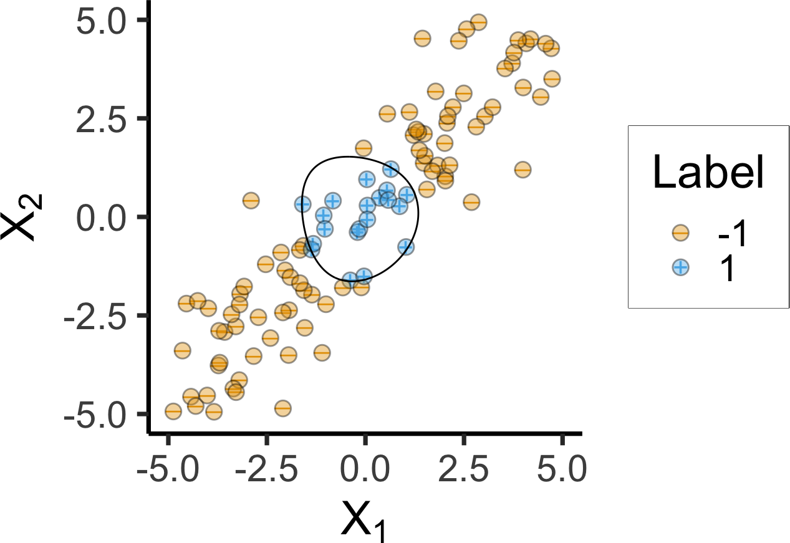
if (!file.exists("assets/spiral_df.rds")) {
spiral_df <- as.data.frame(
mlbench.spirals(300, cycles = 2, sd = 0.09)
)
names(spiral_df) <- c("x1", "x2", "label")
# Fit SVM using a RBF kernel
spirals_svm <- ksvm(
label ~ x1 + x2,
data = spiral_df,
kernel = "rbfdot",
C = 500,
prob.model = TRUE
)
# Grid over which to evaluate decision boundaries
npts <- 500
xgrid <- expand.grid(
x1 = seq(from = -2, 2, length = npts),
x2 = seq(from = -2, 2, length = npts)
)
# Predicted probabilities (as a two-column matrix)
prob_svm <- predict(
spirals_svm,
newdata = xgrid,
type = "probabilities"
)
# Add predicted class probabilities
xgrid2 <- xgrid |>
cbind("SVM" = prob_svm[, 1L]) |>
tidyr::gather(Model, Prob, -x1, -x2)
# Serialize for quicker rendering
saveRDS(spiral_df, "assets/spiral_df.rds")
saveRDS(xgrid2, "assets/xgrid2.rds")
} else {
spiral_df <- readRDS("assets/spiral_df.rds")
xgrid2 <- readRDS("assets/xgrid2.rds")
}
# And plot
spiral_df <- spiral_df |> mutate(
Label = factor(ifelse(label == 2, 1, -1))
)
spiral_df |> ggplot(aes(x = x1, y = x2)) +
geom_point(aes(shape = Label, color = Label), size = 3, stroke=4) +
geom_point(aes(fill=Label), color='black', shape=21, size=4, stroke=0.75, alpha=0.4) +
xlab(expression(X[1])) +
ylab(expression(X[2])) +
xlim(-2, 2) +
ylim(-2, 2) +
coord_fixed() +
theme(legend.position = "none") +
theme_dsan(base_size=28) +
stat_contour(
data = xgrid2,
aes(x = x1, y = x2, z = Prob),
breaks = 0.5,
color = "black"
) +
scale_shape_manual("Label", values=c(95, 43))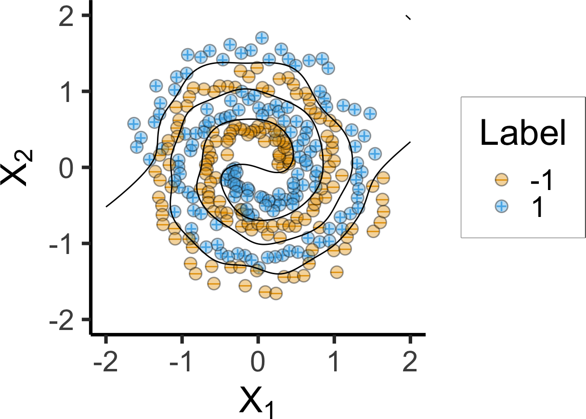
\[ f(\mathbf{x}) = \beta_0 + \sum_{i=1}^{n} \alpha_i \langle \mathbf{x}, \mathbf{x}_i \rangle \]
\[ f(\mathbf{x}) = \beta_0 + \sum_{i \in \mathcal{SV}} \alpha_i K(\mathbf{x}, \mathbf{x}_i) \]
If we have a linearly-separating transformation (like \(f(x) = x^2\)), can “encode” as kernel, saving computation
Example: Transformation of features \(f(x) = x^2\) equivalent to quadratic kernel:
\[ K(x_i, x_{i'}) = (1 + \sum_{j = 1}^{p}x_{ij}x_{i'j})^2 \]
If we don’t have a transformation (and having trouble figuring it out), can change the problem into one of finding a “good” similarity function
Example: Look again at RBF Kernel:
\[ K(x_i, x_{i'}) = \exp\left[ -\gamma \sum_{j=1}^{J} (x_{ij} - x_{i'j})^2 \right] \]
It turns out: no finite collection of transformed features is equivalent to this kernel! (Roughly: can keep adding transformed features to asymptotically approach it—space of SVMs w/kernel thus \(>\) space of SVMs w/transformed features)